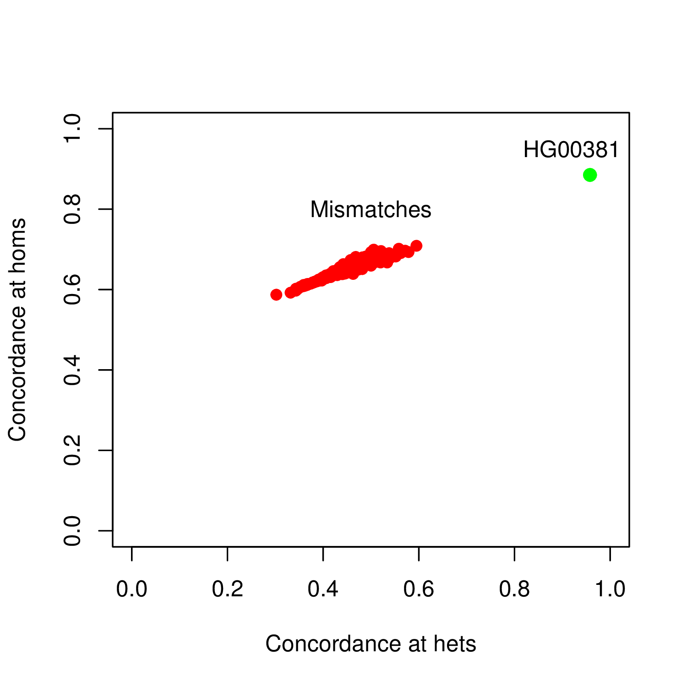

This page is outdated, please also see the man page.
How to cite MBV?
If you use this particular tool in your study, please cite this paper:
Fort et al. MBV: an efficient sample mislabeling and technical bias detection method for combined genotype and sequencing assay data sets (in review).
How to run mbv?
The mbv mode of QTLtools (previously called match) requires two files as input:
- A BAM file containing the sequence data for a particular molecular assay.
- A VCF/BCF file containing the genotype data of many samples, including the one for which you have sequence data
To illustrate how it works, we provide the 2 following example files:
- A RNA-seq BAM file on chr22 for sample HG00381: BAM / index
- A VCF file containing genotypes for 358 samples: VCF / index
Then, you can run mbv on these two files running the command:
QTLtools mbv --bam HG00381.chr22.bam --vcf genotypes.chr22.vcf.gz --filter-mapping-quality 150 --out HG00381.chr22.bamstat.txt
Note that we use the option --filter-mapping-quality 150 since it is the recommended value to remove bad quality reads in a BAM generated with the GEM mapper.
This command produces an output file HG00381.chr22.match.txt as follows:
HG00096 0 23764 61721 175 499 91 333 29
HG00097 0 26639 58846 193 481 93 317 23
HG00099 0 27672 57813 216 458 93 294 26
HG00100 0 28267 57218 243 431 107 281 24
...
HG00381 0 27339 58146 213 461 204 408 28
...
HG00106 0 26046 59439 190 484 90 317 30
HG00108 0 25408 60077 205 469 85 297 31
The 9 columns give:
- 1. The sample ID in the VCF against which the sequence data has been matched
- 2. The number of missing genotypes for this sample
- 3. The total number of heterozygous genotypes examined
- 4. The total number of homozygous genotypes examined
- 5. The number of heterozygous genotypes considered for the matching, i.e. those that are covered by more than --filter-minimal-coverage 10 reads
- 6. The number of homozygous genotypes considered for the matching, i.e. those that are covered by more than --filter-minimal-coverage 10 reads
- 7. The number of heterozygous genotypes considered for the matching with fully matching sequence data
- 8. The number of homozygous genotypes considered for the matching with fully matching sequence data
- 9. The percentage of heterozygous genotypes considered for the matching with fully matching sequence data
- 10. The percentage of homozygous genotypes considered for the matching with fully matching sequence data
- 11. Dummy field
Then, you can compute the ratios G/E and H/F to get the concordances at heterozygous and homozygous genotypes. This helps to identify the genotyped sample in the VCF that matches best your sequence data. It is shown in bold above in the output file and has the same sample ID than the sequence sample, meaning that there is no sample swap here. Alternatively, you can also inspect the output by plotting the output using R as follows:
On this plot, we can clearly identify the set of genotyped samples that do not match the sequence data (in red) with the best match as a clear outlier (in green).
Hereafter the list of options that the mbv mode can use to tune the analysis:
- --filter-mapping-quality [10]: Minimal phred mapping quality for a read to be considered in the matching
- --filter-base-quality [5]: Minimal phred quality for a base to be considered in the matching
- --filter-minimal-coverage [10]: Minimal coverage for a genotype to be considered in the analysis
- --filter-keep-duplicates: Keep duplicate sequencing reads in the analysis (default is no)